Da: Ammiraglio Terenzio Colbotto
StarFleet Medical Command
Dipartimento Igiene
Ufficio Controllo Salute Mentale
A: S.Ten Giuseppe Alighieri
Capitano FF
USS Afrodite - NCC 1863
Equipaggio
USS Afrodite NCC-1863
e p.c.
Capitano Joan Maxwell
StarFlett Command
Sol III - San Francisco
USS Afrodite NCC-1863
Signori,
nonostante la Vostra prima missione sia stata terminata nei tempi e nelle condizioni richieste, sono spiacente di comunicarVi che sono giunte agli uffici del U.C.S.M.
non poche lamentele riguardanti i membri dell'equipaggio e loro ospiti. Soprattutto gli ospiti.
Gatti e avvoltoi in giro per la nave, scienziati pazzi che suonano organi accanto alla sala macchine, fratelli di capitani incatenati ai piloni, "Tavole del Guardiamarina"
gestite da ferenghi, pizzaioli olografici, donne di fatica, mazze ferrate come se piovesse... uso di pattine non autorizzate.
Signori,
la Flotta Stellare non è stata creata per scatenare il caos nel quadrante ma per sedarlo. Il fatto che lo spazio contenga un numero infinito di Nebule non Vi autorizza certo a visitarle tutte. Eccetera eccetera.
Non saranno per il momento presi provvedimenti disciplinari: ma, allo scopo di accertare l'entità effettiva della Vostra Salute Mentale, abbiamo autorizzato il
Consigliere Supremo di Tutti i Consiglieri della Flotta Stellare
Dr. Comm. Proff. Egregio Supremo
Giuseppe Bottino
Professionista Emerito
a svolgere una precisa inchiesta a bordo della nave durante i necessari controlli e riparazioni della stessa. Siete pregati di metterVi a Sua completa disposizione e, se necessario, rimandare/spostare/annullare le Vostre licenze. Per evitare accuse di favoreggiamento anche il Com. Maxwell dovrà sottoporsi agli esami del Supremo Bottino e redarre, come Voi, un rapporto dettagiato ed esaustivo del colloquio, le impressioni, le aspettative per il futuro e quant'altro Vi venga in mente. Non ho alcun dubbio che sarete all'altezza della situazione (il Supremo Bottino è alto un metro e venti).
In particolare, il S.B. vorrà una chiara ed esauriente risposta a queste semplici domande:
- Quanto fa sette per otto?
- Di quanti gradini è composta la scala per arrivare al vostro alloggio?
- Vi sono animali sulla nave? Se sì: quanti?
- Avete mai preso a testate un comignolo?
- Descrivete con parole semplici i vostri sentimenti riguardo le Nebule.
- Avete visto qualche bel film ultimamente?
- Siete soddisfatti del Vostro Capitano?
- Fate mai sogni concernenti i Vostri Professori d'Accademia?
- Di che colore è la Vostra uniforme?
- Qual è il codice a barre del Chinotto?
Attendo i rapporti del Vostro colloquio col S.B. nel più breve tempo possibile allo scopo di avere un chiaro e lineare tracciato della situazione "Afrodite".
Prego trasmettere detti rapporti allo scrivente, Ammiraglio T. Colbotto, c/o Capitano Giuseppe Alighieri.
Colgo l'occasione per augurare a tutti Voi membri della Flotta Stellare BUONA PASQUA!
E arrivederci a presto... spero.